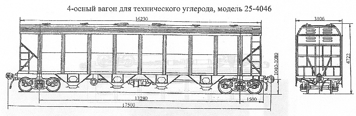

Назначение: для перевозки технического углерода
Параметры
| Номер проекта | 4046.00.000 |
| Технические условия | |
| Модель вагона | 25-4046 |
| Тип вагона | |
| Изготовитель | АО "Днепровагонмаш" |
| Грузоподъемность, т | 72 |
| Масса тары вагона, т | 28 |
| Нагрузка: статическая осевая, кН(тс) |
245(25) |
| погонная, кН/м(тс/м) | 47,97(4,89) |
| Скорость конструкционная, км/ч | 120 |
| Габарит | 1-Т |
| База вагона, мм | 13280 |
| Длина, мм: по осям сцепления автосцепок |
17500 |
| по концевым балкам рамы (длина рамы) | 16280 |
| Ширина максимальная, мм: | 3106 |
| Высота от уровня верха головок рельсов, мм максимальная |
4722 |
| до разгрузочных устройств | 300 |
| Количество осей, шт. | 4 |
| Модель 2-осной тележки | 18-100 |
| Наличие переходной площадки | нет |
| Наличие стояночного тормоза | есть |
| Объем кузова, м³ | 146 |
| Длина,мм: по верхней обвязке |
16230 |
| кузова внутри (по верху) | 16100 |
| Ширина максимальная по стойкам, мм | 3106 |
| Количество люков,шт.: загрузочных |
12 |
| разгрузочных | 8 |
| Размеры люка в свету, мм: загрузочных |
Ø300 |
| разгрузочных | Ø390 |
| Угол наклона, град: торцовых стенок |
40 |
| бункеров | 40 |
| Год постановки на серийное производство | |
| Возможность установки буферов | нет |